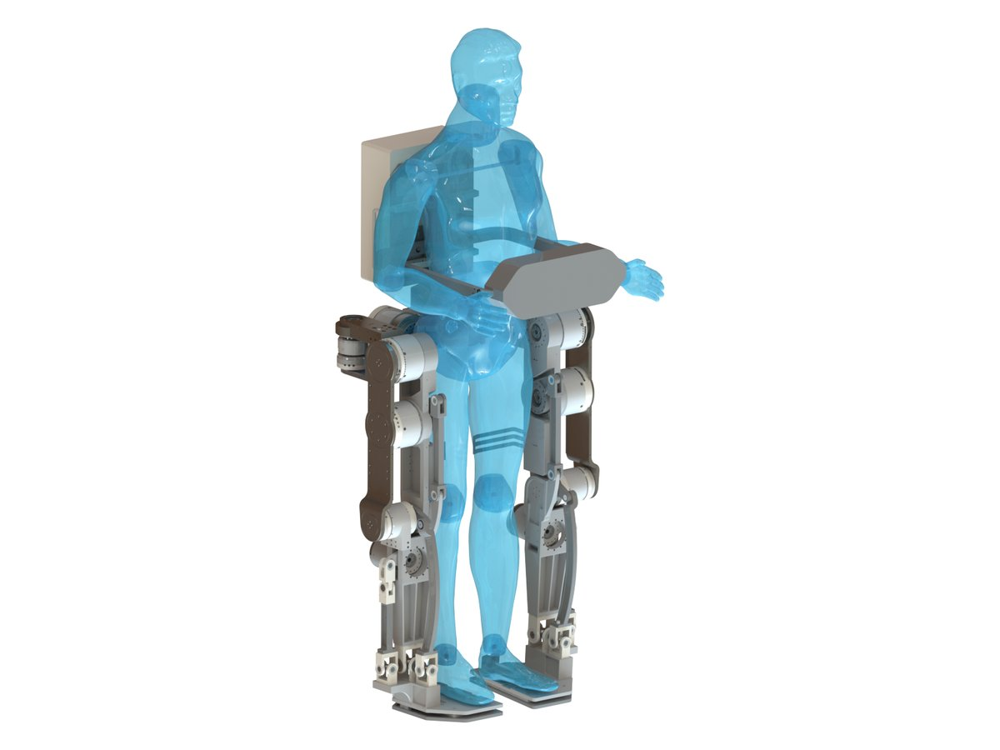
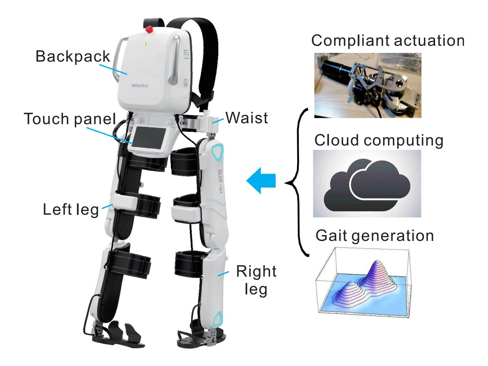
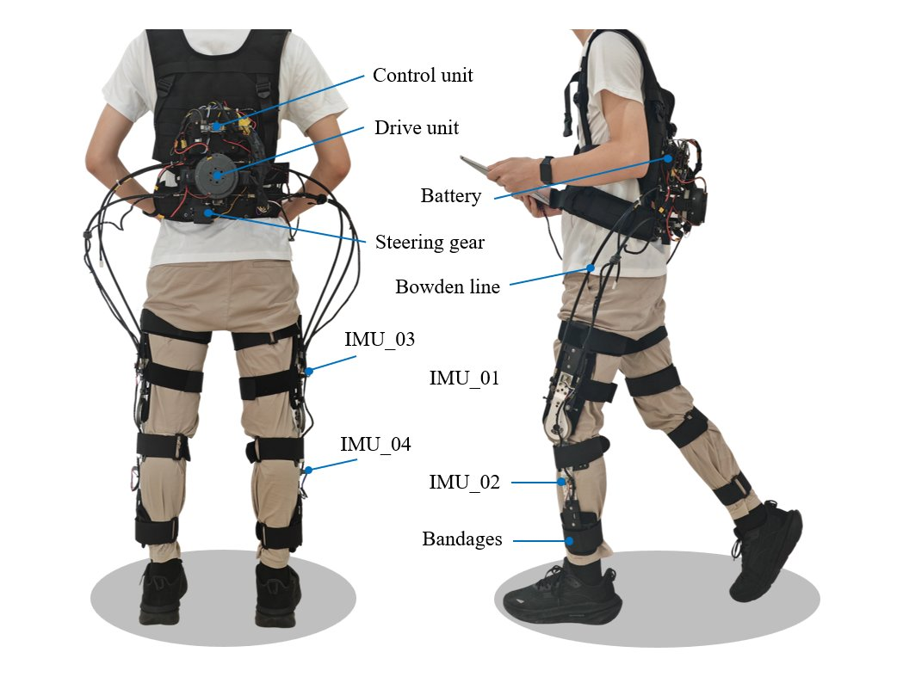

Rehabilitation robotics · Wearable exoskeletons
Shisheng
Shisheng
Zhang张石生
Ph.D. candidate at the Shenzhen Institutes of Advanced Technology, Chinese Academy of Sciences, designing exoskeletons that balance, adapt and assist, in the clinic and in daily life.
Research
Three connected questions about how a wearable robot can keep a person stable, move the way they move, and help without getting in the way.
02
Individualized gait generation for rehabilitation
Patient-specific gait trajectories for stroke survivors.
Papers →
